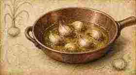
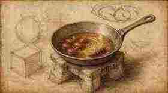
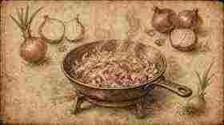
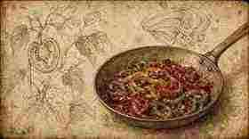
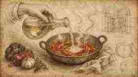
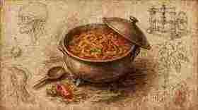
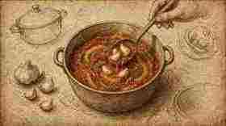
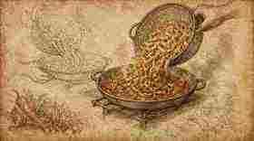
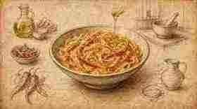
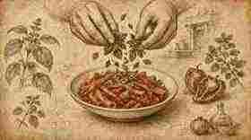

01
Scalda l’olio EVO e tosta leggermente l’aglio fino a renderlo aromatico, senza colorarlo in modo aggressivo.
Warm the EVOO and lightly toast the garlic until aromatic — avoid harsh browning.

Ricetta 01 · Tutorial
Recipe 01 · Tutorial
Una peperonata lenta e profumata, finita in padella con rigatoni di kamut, acqua di cottura e erbe strappate a mano — struttura Fooby, illustrazioni Leonardo.
A slow, fragrant peperonata finished in the pan with kamut rigatoni, pasta water and hand-torn herbs — Fooby structure, Leonardo illustrations.
← Scheda classica del quaderno ← Classic notebook cardScalda l’olio EVO e tosta leggermente l’aglio fino a renderlo aromatico, senza colorarlo in modo aggressivo.
Warm the EVOO and lightly toast the garlic until aromatic — avoid harsh browning.

Aggiungi il peperoncino, poi i pomodorini datterini.
Add the chilli, then the date tomatoes.

Unisci cipolla bianca e rossa; falle sudare finché risultano morbide.
Add white and red onion; sweat until soft.

Aggiungi i peperoni e lasciali prendere colore, così gli zuccheri caramellizzano.
Add the peppers and let them catch so the sugars caramelise.

Sfumare con vino bianco e farlo evaporare del tutto.
Deglaze with white wine and cook it off completely.

Versa la salsa di pomodoro, copri e cuoci 40 minuti–1 ora, finché tutto è morbido.
Add tomato sauce, cover, and cook 40 minutes–1 hour until soft.

Scopri per finire la cottura e togli l’aglio.
Uncover to finish cooking, then remove the garlic.

Cuoci i rigatoni di kamut 1 minuto sotto cottura; scolali direttamente nella peperonata.
Cook kamut rigatoni 1 minute underdone; drain straight into the peperonata.

Amalgama con acqua di cottura fino a una cremosità setosa; un filo d’olio per lucidare.
Loosen with pasta water until creamy; drizzle oil for shine.

Fuori dal fuoco, strappa basilico e origano a mano e mescola.
Off the heat, tear basil and oregano by hand and fold through.
